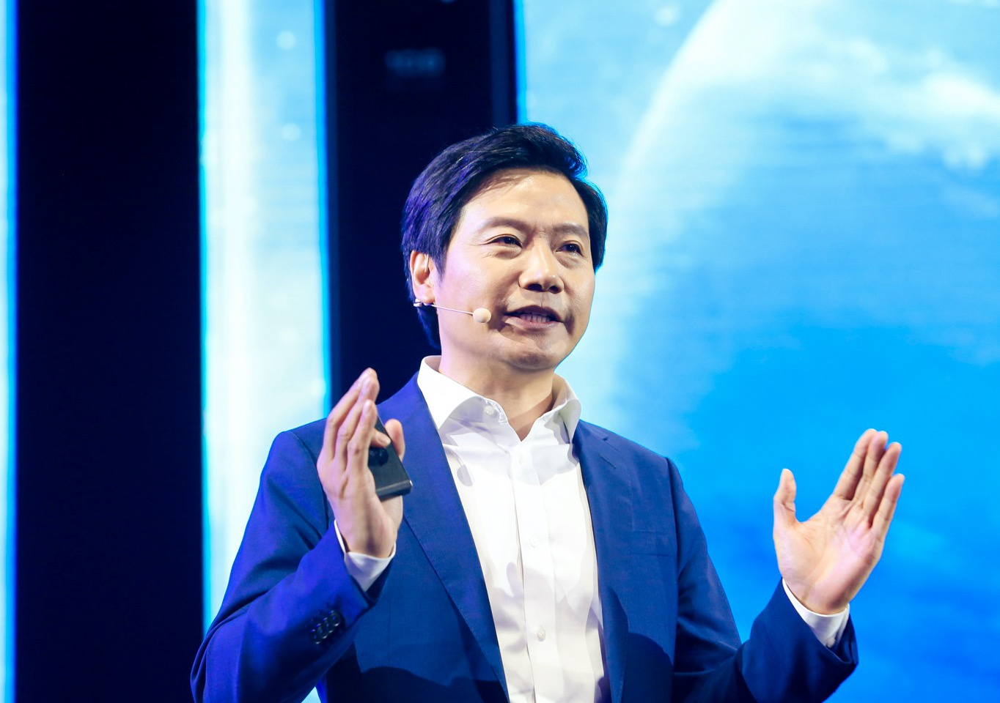

雷军
雷军，是一名成功且富有创新精神、经验丰富、极具影响力的企业家。他凭借卓越的商业洞察力和领导能力，在科技行业取得了显著的成就。雷军以其勤奋务实的工作态度和对市场趋势的敏锐把握，带领小米科技迅速发展壮大，成为中国乃至全球知名的科技企业。他不仅注重产品的创新和高性价比，还积极推动企业的社会责任和公益事业。雷军的成功经验和创业精神为年轻人树立了榜样，对推动中国科技产业的发展做出了重要贡献。

一.职业生涯
1.早期经历
- 1991年毕业于武汉大学计算机系，同年加入金山软件公司，从软件研发做起，后涉足市场运作和高科技企业管理。
- 在金山软件公司任职期间，成功地组织开发了一系列产品，并成功地进行了一系列市场操作。
- 1998年被武汉大学聘为名誉教授。
- 2000年底出任北京金山软件股份有限公司总裁。
2.小米科技创始人
- 2010年创办小米科技，专注于智能手机、智能家居和消费电子产品的开发与销售。
- 以高性价比和在线 销售模式迅速崛起，小米成为中国最具影响力的科技企业之一。
二.社会荣誉与职务
- 2012年荣获“中国经济年度人物新锐奖”。
- 曾任两届海淀区政协委员，2012年当选北京市人大代表，2013年2月当选全国人大代表。
三.个人风格与特点
- 雷军以勤奋、务实和创新著称。在创办小米科技之前，他已经积累了丰富的管理经验和商业洞察力。
- 他注重用户体验和极致性价比的理念，使得小米产品在市场上获得了广泛的认可和好评。
- 近年来，雷军还积极参与社交媒体和直播活动，与粉丝互动频繁，展现了其亲和力和幽默感。